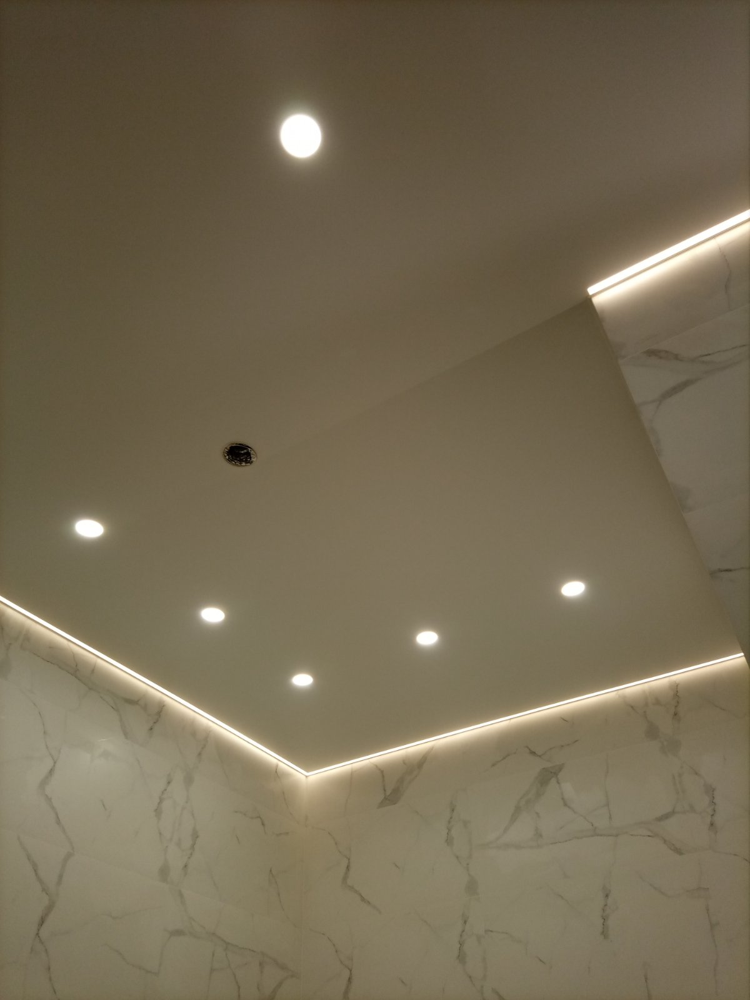

Cамые красивые натяжные потолки фото
Натяжные потолки прочно вошли в современный инструментарий создания стильного интерьера помещения. Можно сказать, что по внешней привлекательности – это лучший вариант оформления потолка. Фото натяжных потолков, которые можно увидеть в портфолио наших работ – яркое тому подтверждение.
Кратко охарактеризуем существующие виды натяжных потолков и приведем их фото для наглядности.
Фото ПВХ натяжных потолков
Самый распространённый и самый разнообразный вид. К нему относятся натяжные полотно, выполненные из ПВХ пленки, толщиной 15 – 35 мкм. К положительным потребительским качествам этого вида относятся:
- Доступная цена – пленочные полотна в 2-3 раза дешевле тканевых.
- Огромное разнообразие цветов, фактур, возможность соединять разные полотно в одно целое при помощи сварки (пайки). При этом сварной шов практически незаметен. Его ширина составляет 0,8 мм. Поэтому легко получить многоцветные полотна, а также перекрывать большие по ширине площади (свыше 5 м).
- Герметичность – правильно установленное пленочное полотно не пропустит воду при заливке помещения сверху.
- Высокая долговечность – качественные пленочные натяжные потолки могут служить 10-15 лет, не теряя своей привлекательности.
- Водостойкость – пленка абсолютно не боится воды, поэтому может быть использована в любых помещениях.
Недостатками пленочного варианта являются:
- Низкая морозостойкость. Производители рекомендуют не опускать температуру в помещении ниже +50С. В противном случае натяжное полотно может треснуть от собственного натяга.
- Низкая механическая прочность. Пленку легко проткнуть каким-нибудь острым предметом. А так как полотно находится в натянутом состоянии, прокол может со временем увеличиваться, особенно, если он имеет рванные края (имеются концентраторы напряжений).
- Для монтажа потолка необходим его прогрев до 60-70 С.
Фактуры пленочных натяжных потолков
Существуют три фактуры:
- глянцевая;
- матовая;
- сатиновая.
Глянцевый натяжной потолок
Для получения глянца на ПВХ пленку наносят слой лака. Поэтому такие потолки иногда называют лакированными или лаковыми. Благодаря этому слою пленка приобретает высокие отражающие способности, что отчетливо видно на фото. В принципе, она становится зеркальной. То есть на ней отражается весь интерьер помещения. Благодаря этому свойству такой потолок делает комнату светлее, визуально увеличивает ее в объеме, делает праздничной.
Фотопечать на глянце выглядит яркой. Цвет передается без искажений, но рисунок должен быть без мелких деталей. Небо с облаками, пейзажи без тщательной деталировки – вот наиболее подходящие темы для изображений на глянце.
Этот вариант рекомендуется устанавливать в случае невысоких потолков или темных помещений, типа прихожих. Также возможно использование, наоборот, для пространных помещений, для придания им в прямом смысле этого слова ослепительного великолепия.
Также глянцевый потолок хорошо подойдет для кухни, так как в силу своей идеально гладкой поверхности с него легко убрать копоть, жир, пыль, которые образуются в этом помещении. Необходимо лишь соблюдать правила по мойке пленочных натяжных потолков.
Но для обширных по площади комнат мы рекомендуем использовать глянец с осторожностью, так как он утомляет. Например, в спальне, если вы хотите установить глянцевый натяжной потолок, лучше его сделать отдельной зоной, например, непосредственно над кроватью. А других местах использовать матовую фактуру. Наиболее предпочтительный вариант интерьера для глянцевого натяжного потолка − хай тек или кантри.
Матовый натяжной потолок
Является противоположностью глянца. На фото этого натяжного потолка видно, что он напоминает идеально оштукатуренную поверхность. То есть никаких отражений света. Такой вариант подходит для классических интерьеров, интерьеров в стиле барокко или ампир. То есть в тех случаях, когда внимание необходимо акцентировать именно на обстановке в помещении, а не на потолке.
Матовая поверхность хорошо подходит для фотопечати изображений, в которых большую роль играет проработка мелких деталей. Хорошо передается объем и насыщенность. Но возможно искажение цвета по сравнению с исходным изображением на компьютере. Репродукции картин, фресок, натюрморты, пейзажи с тщательной деталировкой − наиболее оптимальные темы рисунков для матовых натяжных потолков.
В отличие от глянца матовое полотно чистить сложнее, так как оно имеет определенную шероховатость.
Сатиновый натяжной потолок
Некоторые ошибочно причисляют его к тканевым натяжным потолкам. Мол, это же сатин. Нет, свое название этот вид пленочного потолка получил из-за фактуры пленки, похожей на сатин. То есть, все равно это пленка. С точки зрения отражательной способности этот вариант занимает промежуточное положение между глянцем и матовой поверхностью. Он в какой-то мере отражает свет, но об эффекте зеркала речь не идет. Благодаря этому свет от люстр не так ярко бликует, как от глянца и смотрится с одно стороны празднично, а с другой − умеренно, не утомляюще. На фото сатиновых натяжных потолков это хорошо видно.
Такие полотна обладают небольшим перламутровым эффектом. При определенных углах падения солнечных лучей на его поверхности может наблюдаться разложение лучей на спектральные составляющие (радуга). Но, повторимся, этот эффект незначителен.
Благодаря сатиновой фактуре, на такие потолки можно наносить любые рисунки – от репродукций картин до пейзажей и узоров.
Можно сказать, что сатиновый натяжной потолок является универсальным. Его можно устанавливать в любых помещениях и с любым интерьером. Это отличный вариант для детских комнат, особенно если будут сделаны рисунки мультяшных героев.
Тканевые натяжные потолки
Такие потолки выполняются из полотен особого плетения − используются полиэстровые нити, которые после переплетения пропитываются специальным составом. То есть ткань является на 100% искусственной.
Положительными качествами таких потолков являются:
- Изысканный аристократичный вид.
- Большое количество фактур. Прошли те времена, когда тканевые полотна могли похвастаться только одной фактурой – матовой. Теперь рынок предлагает ткань с тисненым узором, сатиновую ткань, потолки под замшу, бархат, кожу, натуральный камень, мрамор.
- Тканевые полотна можно вручную расписывать акриловыми красками, то есть придавая им эксклюзивность.
- Высокая прочность. Случайно проткнуть такое полотно невозможно.
- Очень высокая долговечность – 25-35 лет.
- Морозоустойчивость. Тканевое натяжное полотно не боится низких температур до минус 450С.
- Для монтажа потолка нет необходимости в его прогревании.
- Искусственная ткань более экологически безопаснее, чем ПВХ пленка. Особенно, если идет речь об эко серии бренда Cerutti.
Теперь о минусах:
- Высокая цена – в 2-3 раза выше, чем у пленочных потолков.
- Значительно меньшее разнообразие в цветовых решениях и только одна фактура – матовая.
- Только отдельные виды тканевых полотен не пропускают воду. При этом, вследствие того, что под действием воды ткань практически не растягивается, возникают большие отрывающие усилия его от багетов. И багеты могут быть оторваны от стен.
- Нельзя соединить несколько полотен в одно целое, поэтому перекрывать помещения шириной свыше 5,5 м можно только через промежуточную опору.
Наиболее известными производителями тканевых натяжных потолков являются бренды:
- Clipso (Франция) – является наиболее авторитетным производителем тканевых потолков. Предлагает большой ассортимент продукции − полупрозрачные, антигрязевые, водоотталкивающие, антибактерицидные и другие виды полотен. Но цены на ее продукцию наиболее высокие.
- Descor (Германия) – считается производитель натяжных потолков №2. Также предлагает широкий ассортимент продукции. К ее особенностям относятся:
- наличие премиальной серии полотен Descor Trevira, отличающейся повышенной прочностью;
- наличие двух видов полотен, отличающихся технологией нанесения краски: Descor Print − краска наносится после изготовления полотна (наиболее доступный вариант) и Descor Color − первоначально окрашиваются нити (премиальный вариант);
- наличие полотен с алюминиевыми частицами, которые создают эффект перелива (серия Descor Star).
- Cerutti (Италия) – основное отличие итальянских – многослойность (может быть до 5 слоев). Это повышает их прочность и другие свойства. Второе важное отличие – самая высокая экологичность среди всех натяжных потолков.
Многоуровневые натяжные потолки
Самый выразительный вариант натяжных потолков. Фото вы можете увидеть в нашем портфолио. Многоуровневая конструкция представляет собой два или более натяжных полотна, закрепленных друг над другом.
Выше мы уже говорили о двухуровневом потолке, когда рассматривали 3D рисунки. Но это только частный случай. В основном же натяжные полотна делают с вырезами, чтобы были видны все уровни. Проемы между уровнями декорируют гипсокартонными вставками, куда часто вставлю еще точечные светильники.
Сочетая полотна с различными фактурами, цветами, фотопечатью, умело используя светильники можно получить очень выразительный натяжной потолок.
При этом даже в стандартной квартире с высотой потолка 260-270 см уже можно установить двухуровневую конструкцию. Но, конечно же, полностью потенциал этого варианта раскрывается в больших и высоких помещениях. В них можно нижний уровень делать с пространственным изгибом с помощью промежуточных опор и гипсокартонных вставок.
Парящие натяжные потолки

В них используются специальные багеты с пазом, куда вставляется LED лента. При ее включении весь периметр потолка как бы вспыхивает. Этот свет маскирует стык натяжного полотна со стеной и зрительно кажется, что оно висит в воздухе − парит.
Между стеной и потолком остается зазор шириной до 25 мм. Его обычно маскируют полупрозрачной вставкой. То есть она пропустит свет от LED ленты, но, в то же время, скрывает ее в дневное время.
Теневой натяжной потолок
Парящие линии
Это более сложный вариант по сравнению с предыдущим. Предварительно на потолке крепятся кронштейны и в них устанавливаются светодиодные ленты и блоки питания к ним. Затем устанавливается ПВХ натяжной потолок. При включении лент свет проникает сквозь пленку, немного рассеиваясь и создается эффект парящих линий.
Светодиодные ленты можно делать не только в виде прямых, но и криволинейными. Также можно установить ленты, которые могут менять цвет и яркость. Управление производится при помощи пульта. С помощью парящих линий можно на потолке создать эффектное зрелище, подчеркнуть контур выреза, замаскировать стык полотна с гипсокартонной вставкой. Разумеется, можно создать парящий натяжной потолок с парящими линиями.
Натяжные потолки с нишей для штор
Модное решение, которое быстро завоевывает популярность. Суть его ясна из фото такого натяжного потолка. Штора крепится при помощи потолочного карниза. Перед ней на расстоянии 15-20 см (чтобы можно было свободно сдвигать и раздвигать шторы) устанавливается багет для натяжного полотна с креплением на потолке. То есть создается в натяжном потолке карман, в котором размещаются шторы.
Получается эстетически выразительная конструкция – шторы как бы идут прямо из потолка и место их крепления не видно. Контур кармана, в котором размещаются шторы, можно эффектно выделить при помощи светодиодных линий.
Бесщелевой натяжной потолок
Световые натяжные потолки
Цветные натяжные потолки
Конечно же, мало кто выбирает вариант с белым цветом. Неинтересно и чем он тогда отличается от обычного оштукатуренного или окрашенного водоэмульсионной краской потолка?
Наибольшее количество вариантов цветовых решений предоставляют пленочные потолки – около 250 штук. Наиболее популярными цветами являются:
- бежевый;
- серебристый;
- желтый;
- оранжевый;
- зеленый;
- голубой;
- сиреневый;
- синий;
- фиолетовый;
- красный;
Тканевые натяжные потолки предлагают около 10 вариантов цветовых решений – белый, черный, бежевый, голубой и несколько других.
Обычно, если речь идет не о белом, бежевом, серебристом и желтом потолках, остальные цвета используют в сочетании с другими. Например, белый с черным, красный с белым и т.д. Для этого используют многоуровневые конструкции или, более бюджетное решение, двух или многоцветные пленочные натяжные потолки.
Многоцветные натяжные потолки
На фото этих натяжных потолков из нашего портфолио можно увидеть, насколько красочным становится помещения. Такие двух или многоцветные полотна получают свариванием нескольких пленочных полотен в единое целое. При этом стык может быть любой прямой или криволинейной форме. Например, черно-белый потолок в виде символа Инь и Ян.
Натяжные потолки с рисунком
Каждый из вас, наверняка, видел фото натяжных потолков с рисунком. Согласитесь, впечатляющее зрелище. Выше мы уже начали говорить о фотопечати на пленочных натяжных полотнах. Рассмотрели их плюсы и минусы. Также, помимо ручной росписи акриловыми красками, возможно нанесение фотопечати и на тканевые полотна. В первом, и во втором случае рисунок будет очень выразительным, настоящая картина на холсте. И, по сути, так и есть.
Есть три технологии нанесения фотопечати:
- экосольвентная печать;
- ультрафиолетовая печать;
- латексная печать.
Наиболее доступна экосольвентная печать. Но она наиболее небезопасна с экологической точки зрения. К ее достоинствам можно отнести воспроизведение рисунка с эффектом картины. Поэтому ее лучше делать на матовых поверхностях. Наиболее экологически безопасна латексная печать. К тому же она позволяет очень точно воспроизводить малейшие детали (фотографический эффект). Для детских комнат мы рекомендуем фотопечать, выполненную при помощи этой технологии.
По тематике рисунки на натяжных потолках делятся на:
- узоры и орнаменты;
- цветы и растения;
- животные и насекомые;
- пейзажи;
- натюрморты;
- репродукции картин.
Особый вид занимают натяжные потолки с 3D рисунками, то есть объемными. Эффект объема может достигаться двумя способами:
- При помощи различных приемов рисования – показ перспективы, специальной раскраской и т.д.
- С использованием двух полотен.
Первый вариант наиболее доступен. Но есть и существенный минус – 3D эффект возникает только если на рисунок смотреть с определенной точки. Обычно рисуют так, чтобы объем был виден при наблюдении со входа в комнату.
Для второго варианта используют двухуровневый натяжной потолок. Первый уровень выполняется из полупрозрачного полотна. На него наносят отдельные элементы рисунка. Второе полотно (ближе к настоящему потолку) непрозрачное матовое. На него наносится основной рисунок. При совмещении возникает полная иллюзия объема.
Резные натяжные потолки - Apply
Эти потолки являются частным вариантом двухуровневой натяжной конструкции. На нижнем полотне делают различные фигурные вырезы (звезды, квадраты, овалы и т.д.). Верхнее полотно обязательно должно отличаться по цвету от нижнего. При совмещении полотен (прикладывании) эти фигурные вырезы становятся отчетливо видны. Резные потолки часто называют apply потолки (от английского apply – прикладывать). Для полотен используется ПВХ пленка.
Для apply потолков используются специальные багеты, которые позволяют фиксировать в них оба полотна на нужном расстоянии друг от друга.
Звездное небо
Один из самых эффектных видов натяжных потолков. Существует несколько вариантов его воплощения. Бюджетный вариант – на полотне делаются блестки, которые имитируют звезды. Плюс рисуют планеты и галактики.
Самый интересный вариант – имитация звезд производится при помощи оптоволокна. За натяжным полотном ставится светогенератор, к которому крепятся пучки оптоволокна. Их концы либо фиксируются непосредственно у полотна, либо выводятся наружу через проколы. Второй вариант более трудоемок, но и более выразителен. Можно в концах оптоволокна установить кристаллы Сваровски.
Наиболее продвинутый вариант – вместо оптоволокна использовать миниатюрные светодиоды, которые связаны в единую сеть блоком управления. В этом случае можно не только имитировать звездное небо, но и различные астрономические явления на нем – пролет кометы, звездопад, взрыв сверхновой, северное сияние и т.д.
Потолок «Звездное небо» наиболее часто устанавливают в спальнях и детских комнатах.
Антибактериальные натяжные потолки
Опять же на фото эти натяжные полотна ничем не отличаются от обычных. Все дело в специальной пропитке, которая уничтожает болезнетворные микробы (включая плесень), попавшие на поверхность потолка.
Антибактериальные натяжные потолки устанавливают в лечебных заведениях (больницах, клиниках, санаториях), в школьных и дошкольных заведениях, а также в бассейнах, где из-за высокой влажности возможно возникновение плесени. Наиболее известные антибактериальные полотна выпускает бренд Clipso.
Надеемся, что этот краткий обзор с фотографиями натяжных потолков поможет вам сделать оптимальный выбор.
Натяжные потолки небо с облоками
Натяжные потолки с светодиодной подсветкой (LED)
Натяжные потолки на мансарде